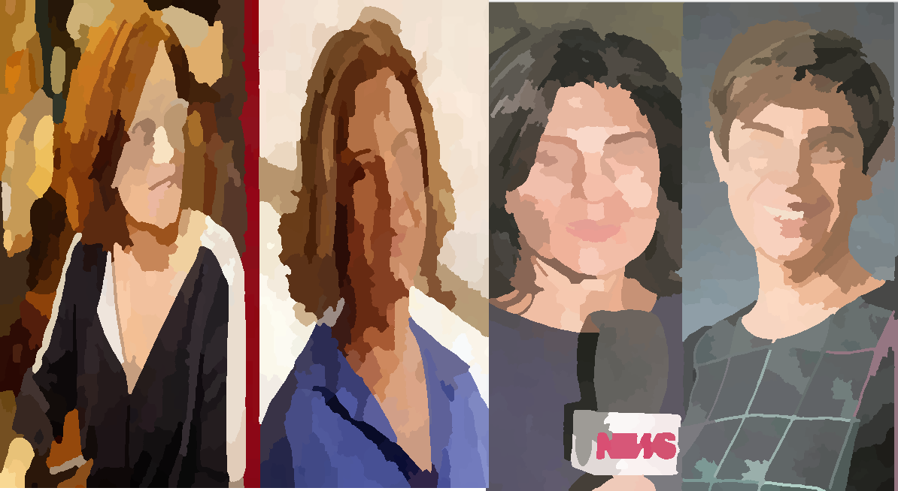

Posts
An example of how to add a heading element inside the list item.
Names
-
Pragmatistas

Apresentação de uma aula sobre o Falibilismo e Pragmatistas. Pierce,Dewey e James
-
Análise de redação do texto Terrorismo Digital de Pondé.

Uma análise do artigo: Terrorismo Digital de Pondé na Folha de São Paulo de 17 de junho de 2019. Depois de analisado concluímos que não passaria no exame de redação do ENEN. O texto é um terror.
Análise de redação do texto Terrorismo Digital de Pondé. “Yo no creo in brujas pero que las hay las hay” Uma poesia não poética inspirada nas ditas jornalistas que dominaram os palcos e holofotes das notícias políticas no periodo Lavajatista.
Atentados Suicidas.
No auge da campanha de impeachment , o PMDB desembarca do governo Dilma. Cunha assume o poder e Temer é o escolhido como o homem bomba. O ato é mais um atentado suicida de nossas instituiçoes.